在理想的 CRM 系统中，从线索到回款（Lead to Cash，简称为 L2C）是一条完整的业务链路，该链路健康度直接关系到公司的营收预测。但在现实的大多数 CRM 系统中，看线索、查商机、追合同、盯回款等操作在系统中分属于不同的模块，要完整获取链路上的信息、进行业务操作，需要同时打开多个页面。另一方面，用户通常需要经过大量筛选设置才能实现精准的信息查询，线索录入、商机更新等写入操作相对繁琐，大幅拉低了日常销售工作的效率。
Cordys CRM L2C 管道专家（github.com/1Panel-dev/CordysCRM-skills），是 Cordys CRM 开源项目组专门面向 WorkBuddy 应用场景开发的技能专家插件。该插件旨在推进 AI 技术能力与 CRM 系统的深度融合，进而打破传统销售运营的困局。Cordys CRM L2C 管道专家底层由九大引擎晶格驱动，覆盖从线索到现金的完整业务链路。它不仅支持自然语言查询和分析，还具备完整的 CRM 系统写入能力，比如创建客户、更新商机、线索转化、跟进记录，均可以通过自然语言交互实现，让 CRM 系统秒添 AI 智能助手。
一、设计思路
Cordys CRM L2C 管道专家并非给 CRM 增加一个新界面，而是为其注入了一个"AI 大脑"。其架构设计遵循五大原则：
■ 角色自适应：系统可以自行判断对话者的身份信息，并且直接适配用户角色。例如对于同一份数据中的同一个问题："看看线索"，系统会向销售回复线索待办优先级，向经理回复团队数据健康仪表盘；
■ 链路原生：L2C 不再只是"功能模块"的组合，而是一条完整的业务链路："线索→客户→商机→报价→合同→订单→回款计划→回款记录→发票"。无论是简单的查询、预警，还是复杂的工作流，都可以在这条业务链路上实现。系统会主动监控每个环节转换的断裂点，例如线索长期未转化、商机赢单后迟迟无合同、合同签约但无回款计划等，在行为演变为事故前主动暴露问题；
■ 九引擎晶格：Cordys CRM L2C 管道专家内部并不是单纯的提示词组合，它由九个引擎晶格各司其职：角色引擎负责身份识别与人格绑定，查询引擎负责自然语言到 CLI（Command-Line Interface，命令行界面）的语义翻译，漏斗引擎负责多模块聚合与链路预测，风险引擎负责跨模块链路断裂检测，写入引擎负责表单获取、数据校验和安全写入等操作。这些引擎只在与用户提问相关时才会加载启动，在与用户提问内容无关时不会浪费注意力；
■ 先于提问的预警：系统可以主动进行风险检测，在数据展示后自动扫描推送商机阶段卡顿、回款逾期、合同到期未续、客户长期无跟进等风险信息，提前为用户做出预警；
■ 安全写入：信息智能写入操作遵循严格的"两阶段"原则：首先获取表单定义，了解必填字段和合法值范围；再基于表单校验输入，执行写入操作。所有写入操作执行后自动验证结果，且绝对禁止任何删除操作，从机制上杜绝数据误删问题。
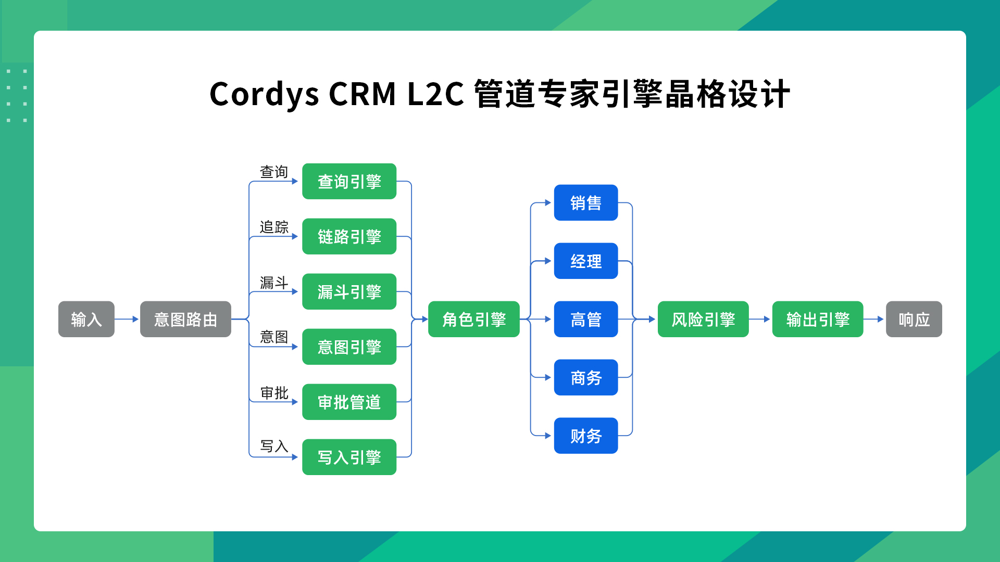
二、安装步骤
在 WorkBuddy 中召唤 Cordys CRM L2C 管道专家的方法非常简单，具体的操作步骤如下：
1. 安装 WorkBuddy 客户端
在召唤 Cordys CRM L2C 管道专家之前，需要先安装好 WorkBuddy 客户端。前往 WorkBuddy 官网（https://www.workbuddy.cn）下载并安装 WorkBuddy 客户端。WorkBuddy 会自动识别用户的操作系统（Windows 或者 macOS），提供对应的安装包，双击即可完成安装。
2. 一键召唤 Cordys CRM L2C 管道专家
WorkBuddy 的专家市场中汇集了覆盖各业务领域的 AI 专家，Cordys CRM L2C 管道专家就是其中之一，我们可以通过以下三步来召唤它。
① 进入专家市场
通过 WorkBuddy 左侧导航栏的"专家.技能.连接器"入口，进入"专家"页面，来到专家市场。这里展示了 WorkBuddy 中所有可用的 AI 专家，按类别分组排列。
② 搜索并安装 Cordys CRM L2C 管道专家
在专家市场的搜索框中输入"Cordys CRM"或"L2C"，系统会智能匹配并展示 Cordys CRM L2C 管道专家卡片，点击"召唤"按钮。
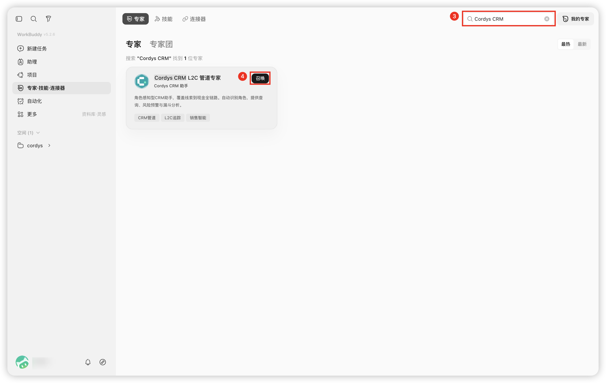
③ 一键召唤，即刻对话
召唤 Cordys CRM L2C 管道专家后，WorkBuddy 会开启一个专属对话窗口，用户可以在对话窗口发送初始化命令，初始化专家配置。
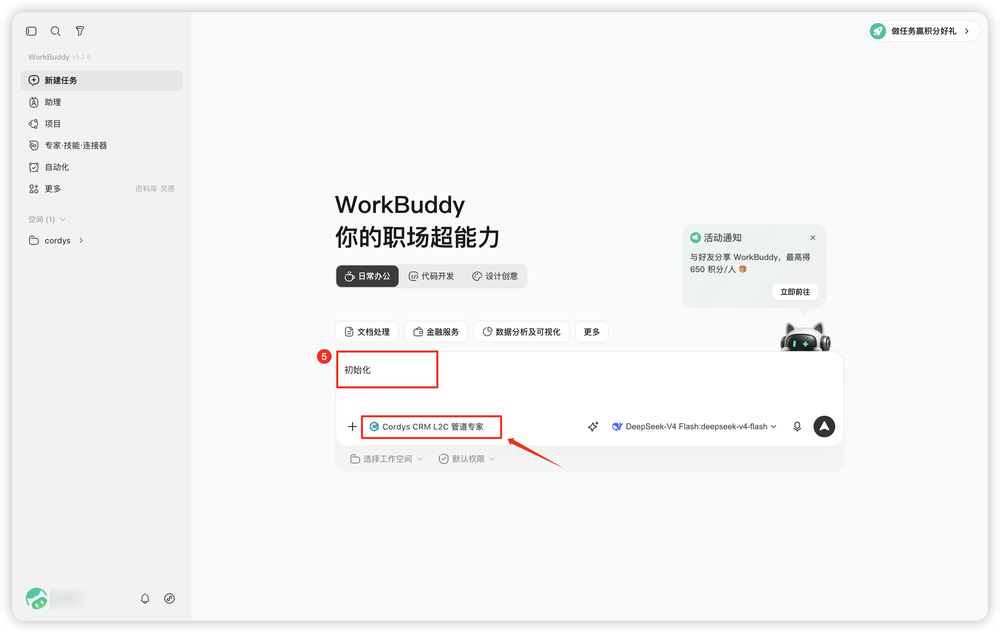
初始化配置需要填入如下三个参数，根据 WorkBuddy 的提示填入即可，请注意区分 AccessKey 以及 Secret Key。
| 参数 | 获取方式 |
|---|---|
| CORDYS_CRM_DOMAIN | Cordys CRM 域名 |
| CORDYS_ACCESS_KEY | 在 Cordys CRM 中依次选择"个人中心"→"API Keys"→"Access Key"，创建后复制 |
| CORDYS_SECRET_KEY | 在 Cordys CRM 中依次选择"个人中心"→"API Keys"→"Secret Key"，创建后复制 |
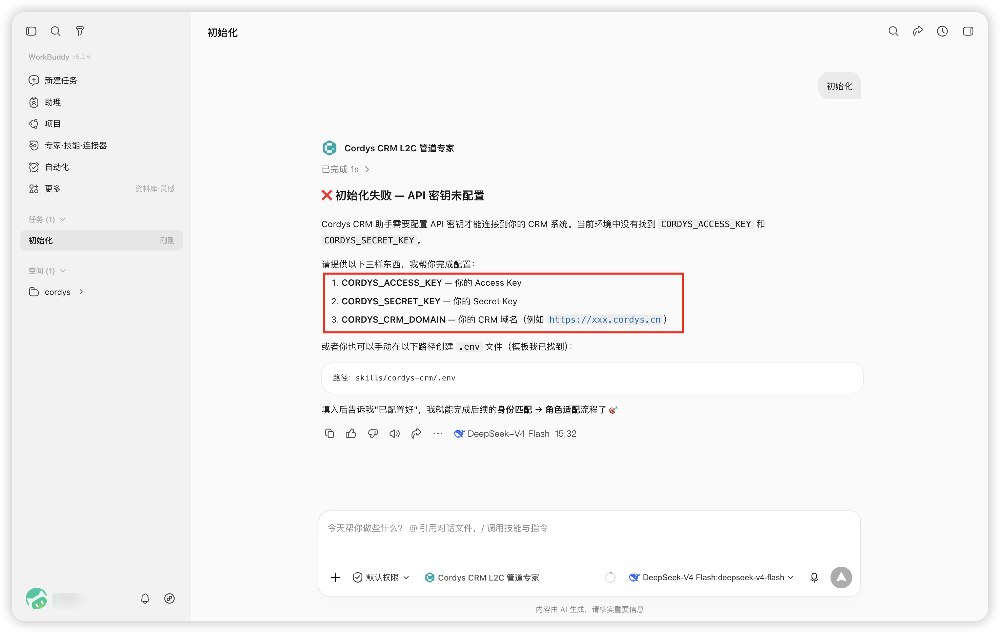
登录至 Cordys CRM，选择首页左下角的"个人信息"选项，进入个人中心的 API Keys 页面，即可从中获取 Access Key 和 Secret Key。
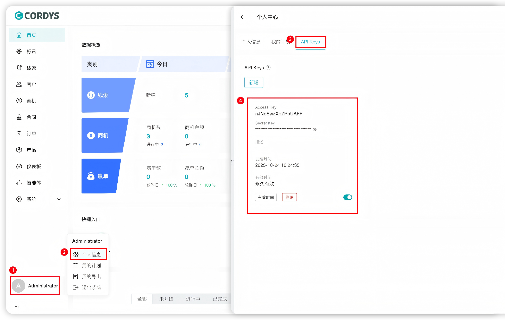
在 WorkBuddy 中输入相关连接信息、完成初始化配置后，Cordys CRM L2C 管道专家会自动加载用户信息，匹配用户角色，加载角色上下文。
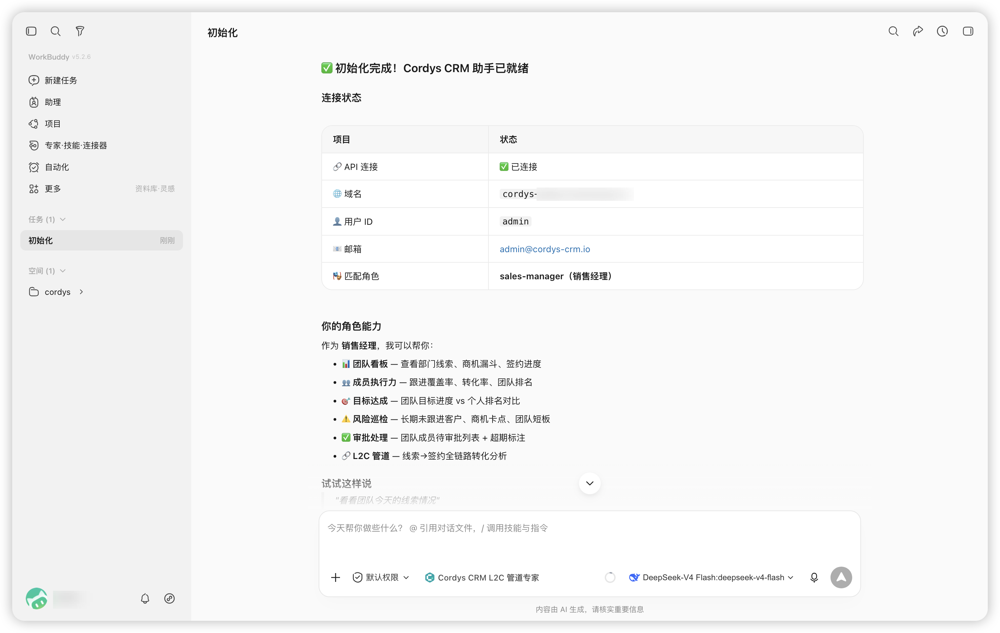
至此，我们已经成功召唤了 Cordys CRM L2C 管道专家。接下来就可以用自然语言向它提问，智能处理销售管理的日常工作。
三、实战场景
Cordys CRM L2C 管道专家核心的差异化能力在于"角色自适应"。系统在对话开始时，可以自动完成身份识别，进行角色匹配，加载角色上下文，让不同的角色分别进入适配的销售管理场景，实现"千人千面"的智能体验。以下是 Cordys CRM L2C 管道专家经典的 7 个使用场景，为您展示系统面向不同人群时，在"展示什么、先展示什么、以什么紧迫度展示"三个维度上的灵活切换。
■ 场景一：销售晨会速览
适用于销售角色的个人行动规划和数据速览。销售人员进入 WorkBuddy，对话 Cordys CRM L2C 管道专家，提问"帮我看看今天有什么要跟的"，专家会自动汇总当日待跟进的线索和商机，并且按紧急度排序，也可以对超期未跟进线索或卡顿商机进行预警。
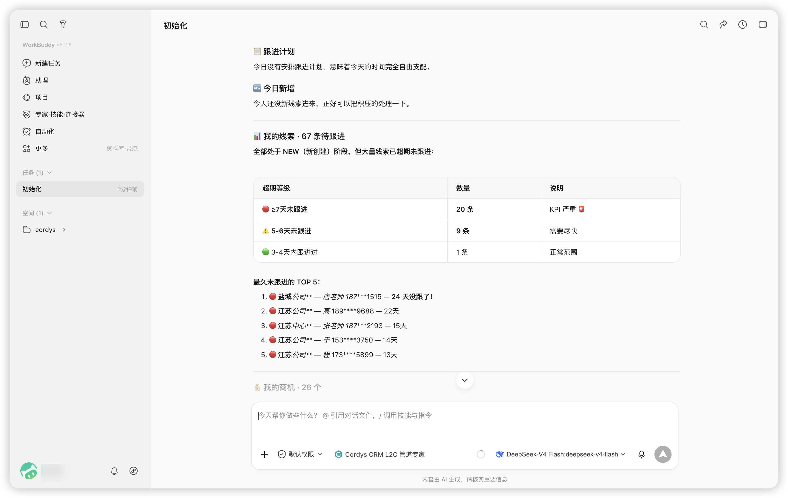
■ 场景二：经理团队周会看板
适用于销售经理角色的团队关注。销售经理进入 WorkBuddy，对话 Cordys CRM L2C 管道专家，提问"这周团队情况怎么样"，专家会迅速呈现包括团队 L2C 漏斗各阶段的商机数量和金额分布、每位成员的线索与签约数据排名等信息在内的可视化看板，所有数据均支持逐层下钻与详细查看，也可以进行跟进率偏低预警，自动识别低转化成员。
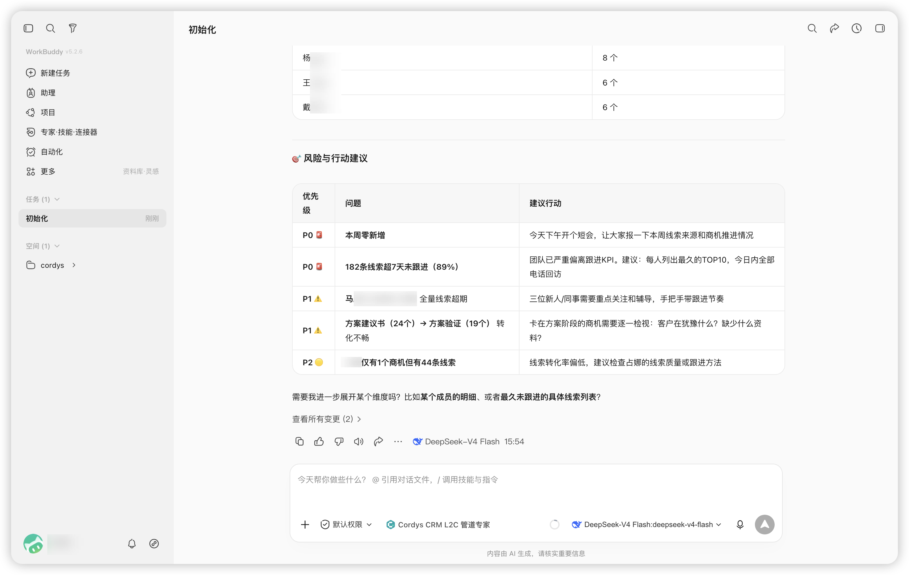
■ 场景三：高管经营分析
适用于高管、VP 角色的经营分析。高管人员进入 WorkBuddy，对话 Cordys CRM L2C 管道专家，提问"本月华东区与华南区的签约对比"，专家会展示不同区域的签约数据、对比差异，以及各区域实际签约与月度目标的差距，也可以通过漏斗引擎进行多模块聚合分析，并且进行季度管道预测。
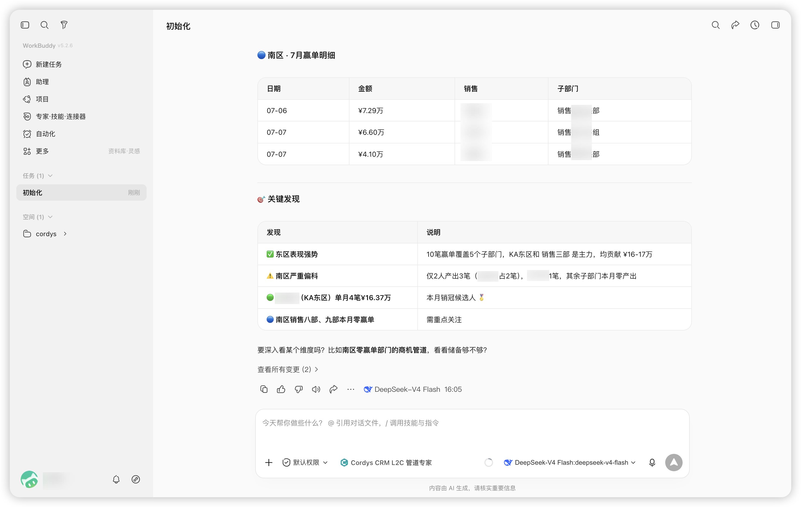
■ 场景四：财务应收全景
适用于财务角色的应收账款管理。财务人员进入 WorkBuddy，对话 Cordys CRM L2C 管道专家，提问"看看有哪些逾期回款"，专家会梳理出完整的应收账款全景，包括逾期回款清单、回款计划创建提醒，以及已开发票未回款的预警，并且可以实现链路断裂检测，以及能够按照金额与逾期天数设置催收优先级排序。
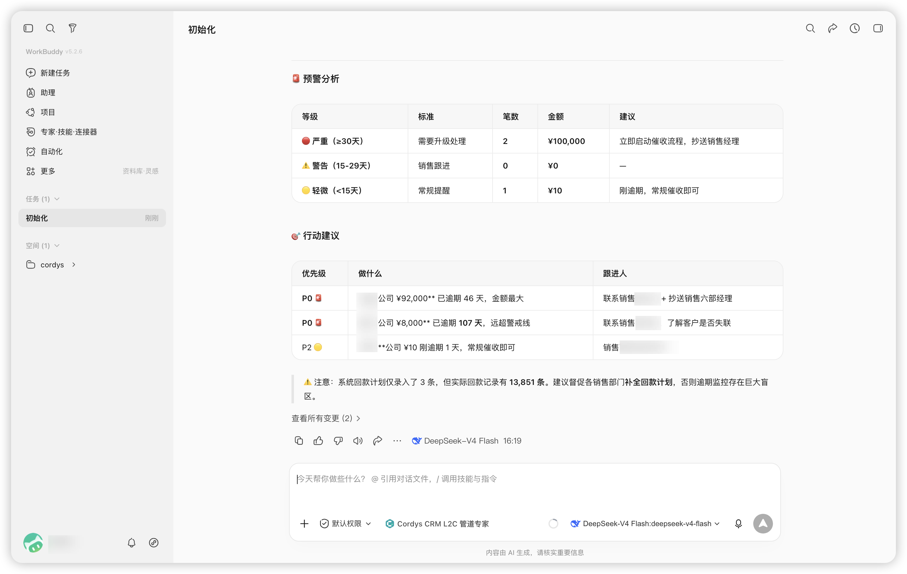
■ 场景五：商务合同到期预警
适用于商务角色的合同生命周期管理。商务人员进入 WorkBuddy，对话 Cordys CRM L2C 全链路专家，提问"哪些合同快到期了"。专家会梳理出合同到期全景，包括即将到期合同列表、续约提醒建议，实现合同到期风险自动检测，并且能够按照到期日与合同金额设置续约优先级排序。
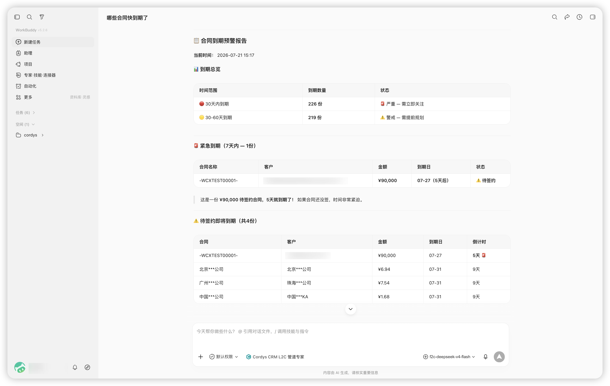
■ 场景六：客户 360 全链路追踪
适用于所有角色的客户 360 全链路追踪。在 WorkBuddy 中对话 Cordys CRM L2C 管道专家，提问"看看 XX 公司的全面情况"，链路引擎会启动正向追溯与反向溯源，一键拉取该公司在 L2C 链路上的关联数据（例如商机、合同、订单、回款和开票的汇总视图等），快速纵览客户的业务全貌。

■ 场景七：一句话完成 CRM 写入
适用于所有权限内角色的 CRM 写入。Cordys CRM L2C 管道专家内置有完整的写入引擎。在 WorkBuddy 中对话 Cordys CRM L2C 管道专家，让它"创建一个客户：小王科技，行业科技，广东"，专家可以在识别出用户的创建需求后，根据已知的必填字段和合法值，自动拉取客户表单定义。专家可以校验用户的输入内容，提取内容中的名称、行业、省份等信息填入表单，默认设定负责人为当前用户，并且提示用户在后续补充更多信息。客户信息创建完成后，向对话的用户展示预览表格，然后执行创建，最后验证结果。同样的方式也适用于创建线索/商机/联系人、更新记录、写跟进记录和线索转化等操作。整个写入流程绝对禁止任何删除操作。
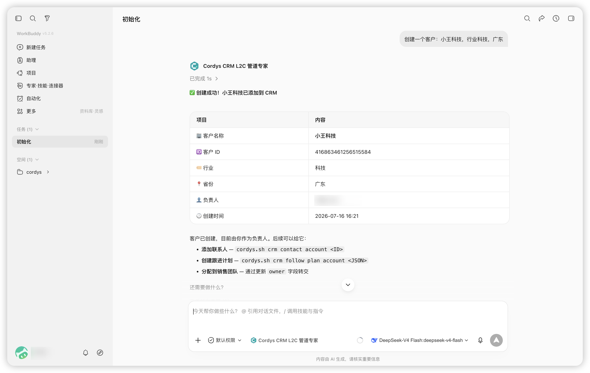
四、业务价值
对比传统 CRM，Cordys CRM L2C 管道专家的优势主要体现在以下方面：
■ 查询分析：自然语言查询，即问即答，无需在多重页面切换操作；
■ 跨模块关联：实现自动跨模块关联，L2C 实现正向追溯与反向溯源的全链路追踪；
■ 角色适配：不同角色适配不同视角，实现千人千面；
■ 数据录入：一句话完成表单录入，AI 智能提取表单信息，无需用户逐字段填写表单和多层级确认内容；
■ 风险预警：先用户一步主动预警危机，提前检测、暴露出 L2C 链路断裂位置，防止问题进一步发展为事故；
■ 学习成本：自然语言沟通即可正常使用，零学习成本；
■ 操作耗时：将原本 3 到 5 分钟完成的查询操作压缩至 3 到 10 秒，将原本 1 到 2 分钟/条完成的录入操作压缩至 10 秒/条，大幅提升日常销售管理效率。
Cordys CRM L2C 管道专家给 Cordys CRM 系统装上一颗"AI 大脑"。用户依然能够使用 CRM 管理数据、执行流程，但日常高频的查询、分析、预警、写入等操作，可以全部交给 WorkBuddy 中的 Cordys CRM L2C 管道专家来完成，将用户的生产力从琐碎的销售管理工作中解放出来，让销售人员有更多的时间和精力创造业务价值。
想要体验 Cordys CRM 与 WorkBuddy 的 AI 能力？欢迎访问 在线体验 快速感受，或通过 GitHub Skills 仓库 了解更多技术细节。如有问题，欢迎加入 用户论坛 与社区交流。